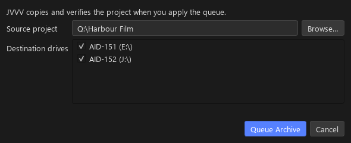
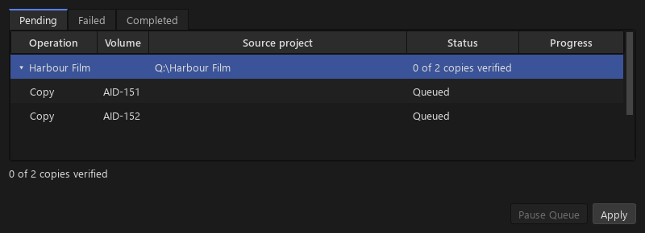
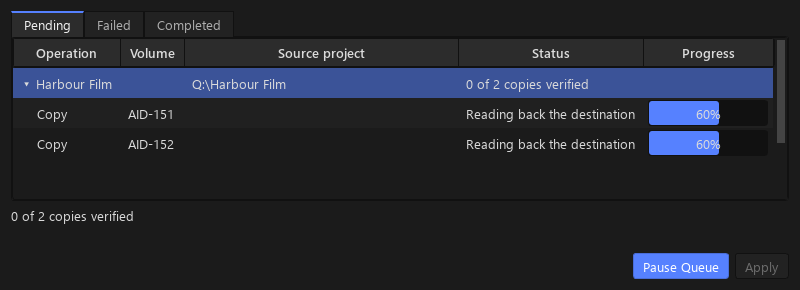
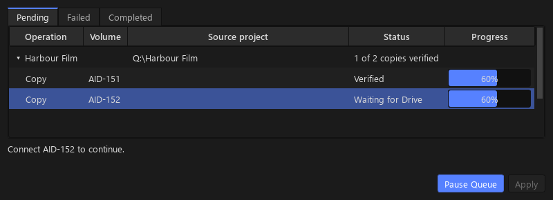
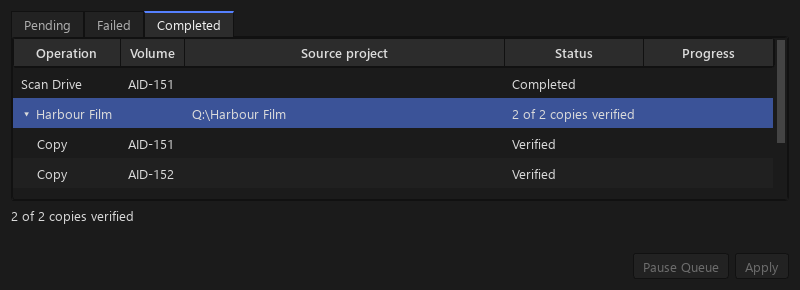
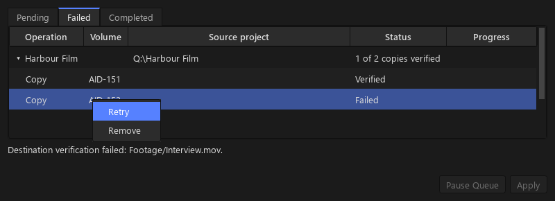

Queue the same project for two drives
Use one archive task when you already know which drives should receive the project. You can connect both now or swap them during the job.
Already finished the first archive? Add another drive to the archived project.
1. Select the destinations together
Choose File → Archive Project…. Browse to your project, tick each destination, and click Queue Archive once. Each HDD needs to have been added to this catalogue. A known volume can be ticked even when it says disconnected.

2. Review and apply
Open Queue Manager → Pending. Expand the project to see one Copy row for each HDD. Check the drive IDs and click Apply. Two destinations for one project count as one task.

3. Follow each drive
When both disks are ready at the start, JVVV can send the same source data to both. Each drive then gets its own read-back check. Expand the project to see which disk is still working.

If you need to swap drives
When AID-151 says Verified and has no other active work, eject it normally. Connect AID-152. Leave JVVV running and the queue applied so the waiting copy starts automatically. Keep Q:\Harbour Film available. Its files supply the second copy. If you closed JVVV, reopen the same catalogue and press Apply.

Check that both finished
Open Completed and expand the project. 2 of 2 copies verified means each HDD passed its check against the original file hashes.

Pause or retry a copy
Use Pause Queue to hold the work and Apply to resume. For a failed copy, select its drive row and read the message underneath. Once you have resolved the cause, right-click the failed drive row, choose Retry, and press Apply. The other verified drive keeps its result.

For Verified with warnings, select the row for details. A preview can fail even when the project files passed verification.